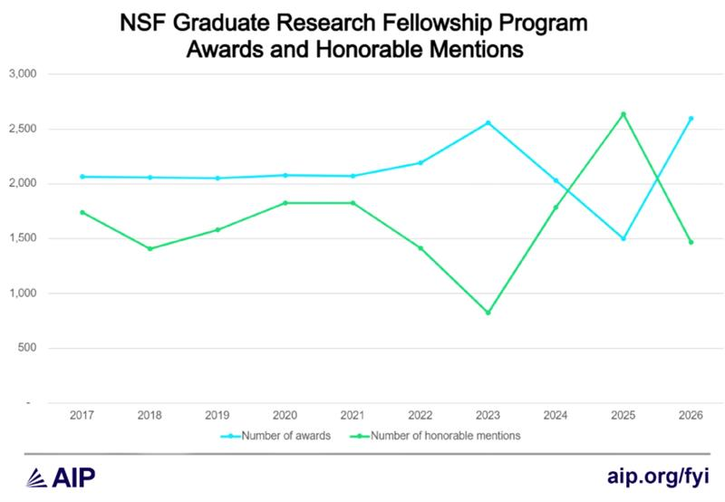

PHYS 4604 · Lecture 5
2026-09-25
| What | When | Points |
|---|---|---|
| Online professional presence | Tonight, Sept. 25, 11:59 PM ET | 4% |
| Research proposal, GRFP style | Oct. 9, 11:59 PM ET | 15% |
| NSF GRFP reference letters | Oct. 16, 8:00 PM ET | – |
| NSF GRFP deadline – Physics & Astronomy | Oct. 23, 8:00 PM ET | – |
The goal of today’s lecture: understand what the NSF Graduate Research Fellowship is, whether you are eligible, and what the application actually asks you to write because the research proposal due Oct. 9 is the GRFP’s research plan in miniature.
I actually used the exact technique discussed today to email a professor and ask if she had some time to help me understand how to start doing research. She invited me to come to campus to talk, and by the end of the meeting she’d offered me a position.
Cold emails with small “asks” can be successful.
I was in San Francisco and went to a networking power night. I spoke to a quiet older gentleman next to me and he ended up being a GT physics alum! He was actively hiring physicists for his company. We kept in contact and he has since tried to hire me.
You never know where a random conversation will lead.
I reached out to a person running a start-up that I knew from playing frisbee with him, and he gave me an internship that has turned into a full-time job after graduation.
Nobody at that frisbee game was “networking.” And yet…
I met a graduating member of SPS through their Discord channel. He got me in contact with his research mentor, as he was looking for someone to take over his project. I now do research with their group.
Your peers are also part of your network, just like your professors, friends, family, coworkers, etc.
| Where it started | What was asked for | What came back | |
|---|---|---|---|
| 1 | A cold email | 30 minutes of advice | A research position |
| 2 | Standing next to someone | Conversation | A standing job offer |
| 3 | A frisbee game | An internship | A full-time job |
| 4 | A club Discord | An introduction | An inherited research project |
“Networking” is just corpo-talk for “being a social human being”.
Be social!
| Annual stipend | $37,000 |
| Cost-of-education allowance | $16,000 to the institution |
| Years of support | 3, used within a 5-year period |
| Total value | ~$159,000 |
| Awards anticipated this cycle | 1,500 |
The fellowship follows you, not a project or an advisor.
That independence is the real value: you can change advisor, change institution, or change topic and keep the funding.
Solicitation NSF 26-526, published August 25, 2026 · (U.S. National Science Foundation 2026b)
| Competition | Awards |
|---|---|
| 2025 | 1,000, then 500 more added later |
| 2026 | ~2,500 offers – an all-time high |
| 2027 | 1,500 anticipated |
Last spring’s drew nearly 14,000 applicants for those ~2,500 offers. Final numbers still depend on congressional appropriations.
Award counts have swung by a factor of two in three years. Do not calibrate on last year’s rate.
Apply anyway: it is the same writing you need for graduate school, and the research plan becomes your statement of purpose.
Applicant and 2026 offer counts: (U.S. National Science Foundation 2026c). Award history and FY 2027 outlook: (Zhang 2026). Anticipated 1,500 awards: (U.S. National Science Foundation 2026b).

Honorable mentions are unfunded, but recognized as high-quality proposals worthy of putting on your CV.
Figure from (Zhang 2026)
You are likely eligible if you are a senior applying to start graduate school next fall.
Once you are a graduate student, you may apply only once – and second-year graduate students are not eligible at all. Applying now does not use up that attempt.
| Component | Length | What it is |
|---|---|---|
| Personal, Relevant Background and Future Goals | 3 pages | Who you are, how you got here, where you’re going |
| Graduate Research Plan | 2 pages | A specific research question and how you’d attack it |
| Reference letters | 3 letters | Due Oct. 16, one week before your deadline |
| Transcripts | – | From every institution attended |
The research proposal due Oct. 9 is the Graduate Research Plan. If you are applying this year, write the real one.
Everything else is under your control. The letters are not.
Start asking your letter-writers now. Do not delay.
The ask itself
“Are you able to write me a strong letter of recommendation for the NSF GRFP? Letters are due October 16.”
Give them room to say no; don’t take it personally if they decline.
Send a packet with the ask
Due to time, an incomplete “packet” is better than nothing.
Then send one reminder a week out, and thank them afterward.
Every reviewer scores you on exactly two things. Both documents are read against both criteria.
The potential to advance knowledge.
The potential to benefit society.
Broader Impacts is where most physics applications lose. It is not a paragraph you append at the end. Write it into both documents.
| What | When |
|---|---|
| Research proposal – GRFP research plan | Oct. 9, 11:59 PM ET |
| Reference letters submitted by your writers | Oct. 16, 8:00 PM ET |
| Application – Physics & Astronomy | Oct. 23, 8:00 PM ET |
All NSF times are 8:00 p.m. ET, not 11:59. The portal closes on schedule and there is no late submission.
Deadlines are 8:00 p.m. ET as specified in the solicitation · (U.S. National Science Foundation 2026b)
Pick one person. Not a category – a person, with a name.
One of your classmates did exactly that last week and had a position by the end of the meeting.
PHYS 4604 · Fall 2026 · Georgia Institute of Technology